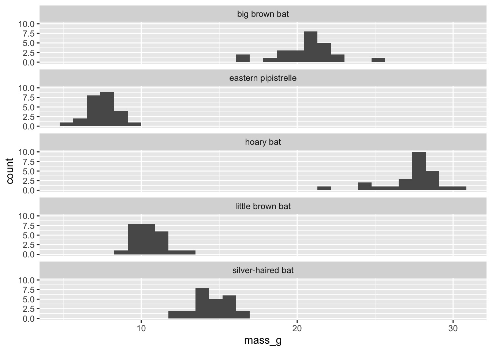
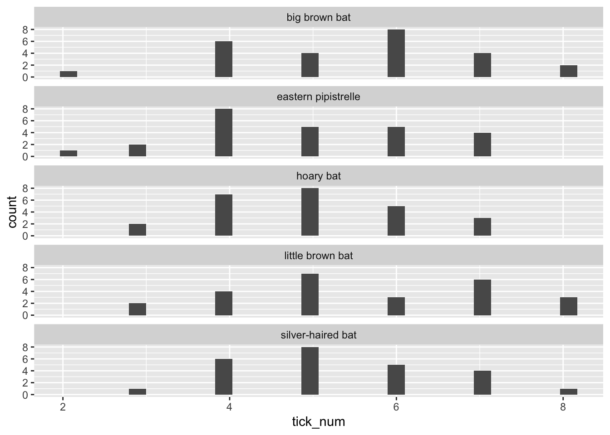
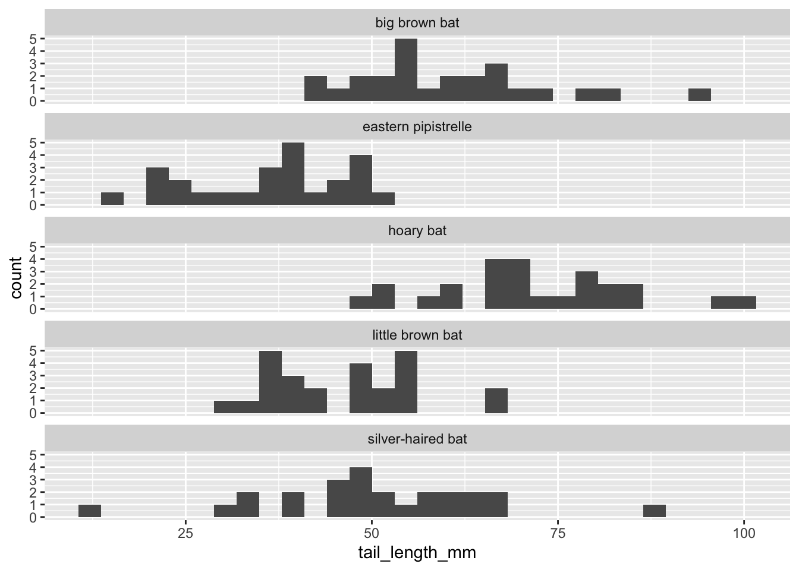
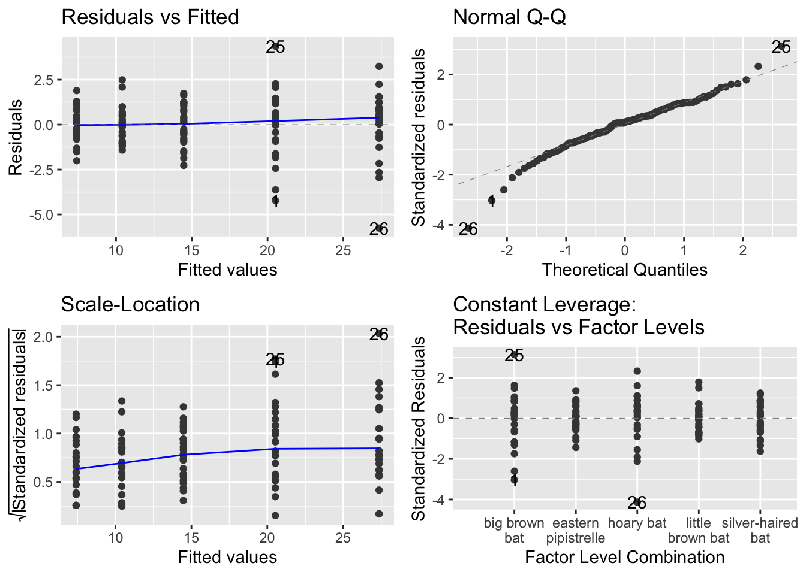
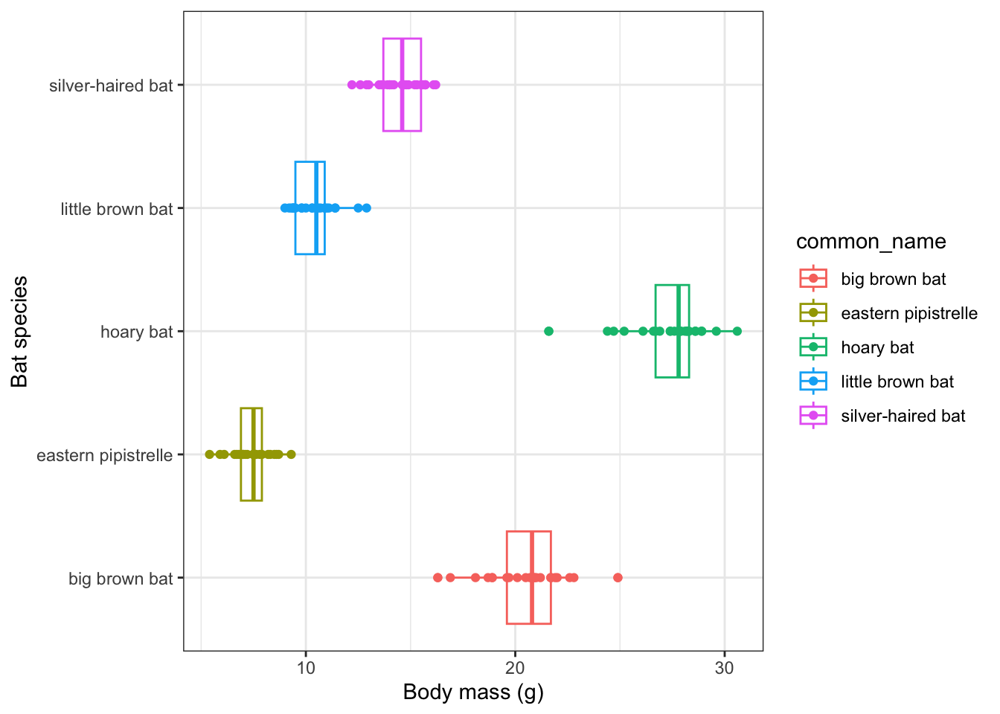
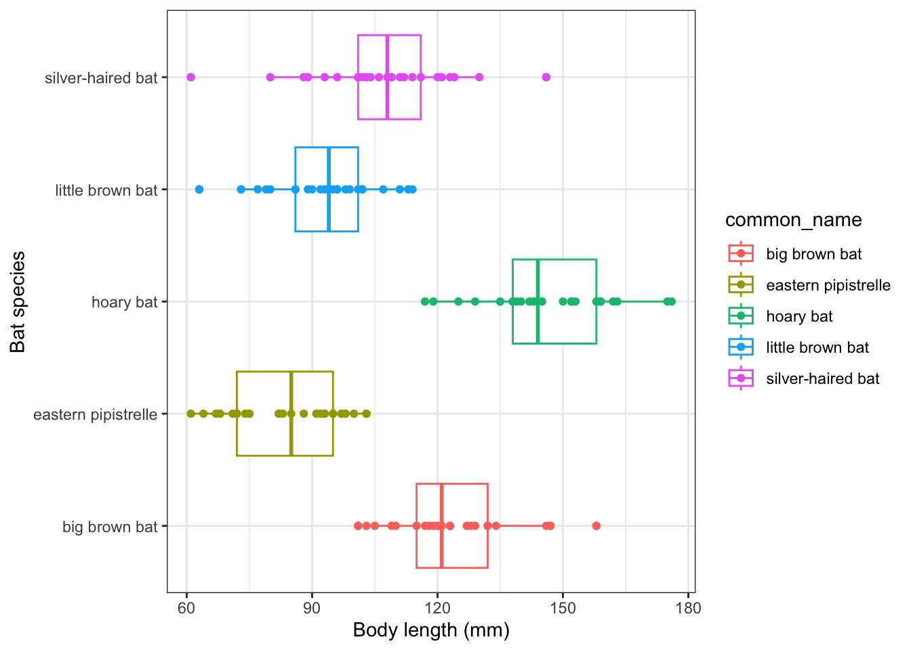
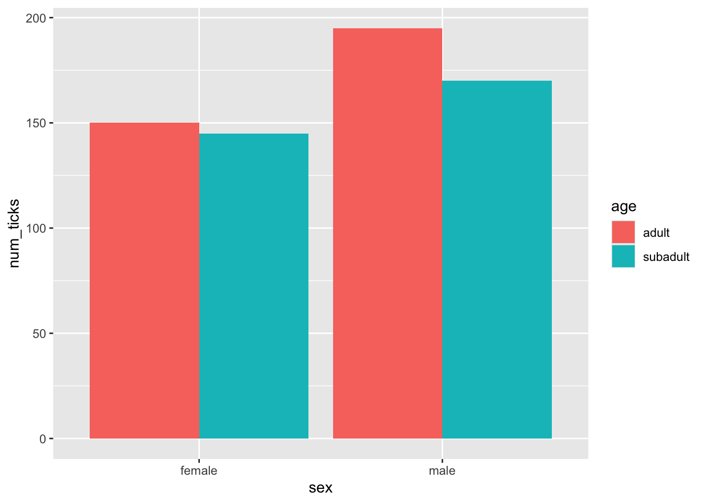
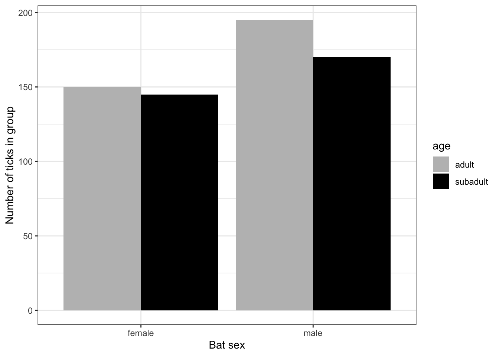
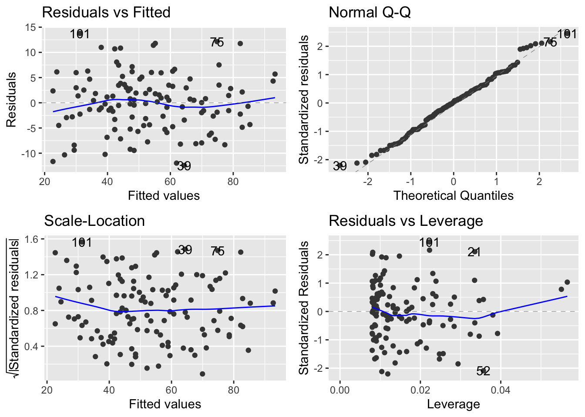
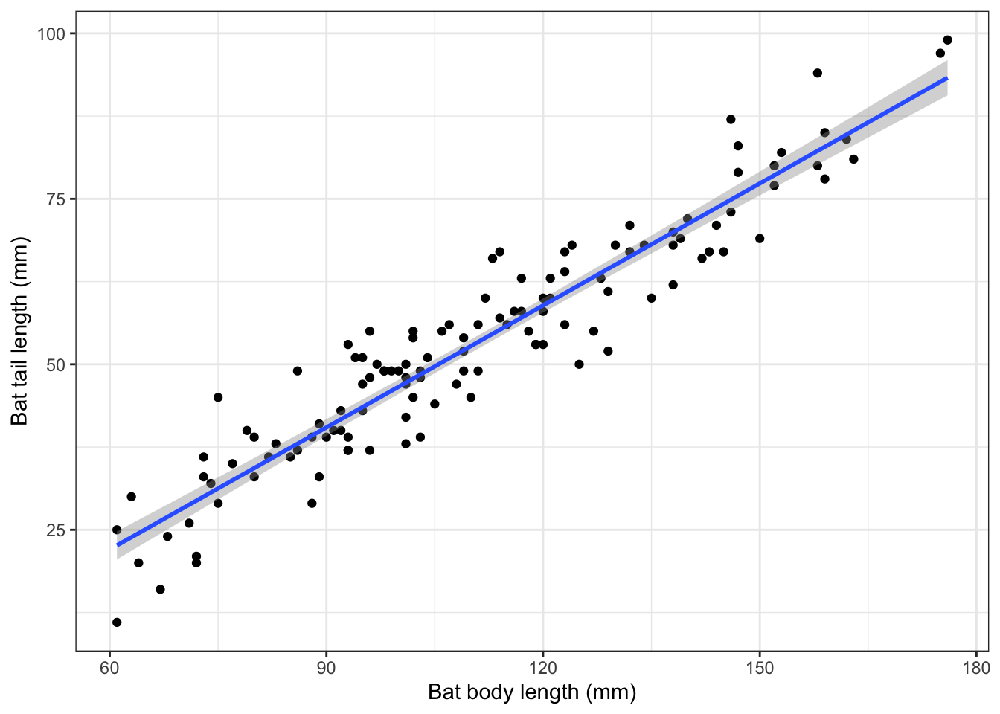

Let’s open with some general commentary about the assignment. Like this:
This is the code for my Biostatistics Problem Set 3 on applying basic statistics. We have been given a data set with data about 5 different bat species and several questions to address, as follows:
A. Does body mass differ between these five species of bats and, if so, how does body mass differ between the species?
B. Does body length differ between these five species of bats and, if so, how does body length differ between the species?
C. Is the number of ticks found on the bats associated with their sex or age?
D. Disregarding species, is there a relationship in bats between tail length and body length?
Steps 1 - 3 of the assignment are to fork this project, create an RStudio project from the fork, create this .qmd file, etc. We’ll start here with Step 4, which is to write the code for the analysis. We were given this caveat:
Remember to think about everything we learned BEFORE Chapter 5 of GSWR and include those steps in your workflow in addition to steps from Chapter 5. For each analysis that you perform, be sure to explain the nature of the predictor and response variables and why you selected the analysis method in your .qmd file.
That hint is telling me that I better do some data exploration before I begin my analysis. I did not put any errors in the dataset, but it is a good idea to always check.
Please note: I asked you to put all of your code in one .qmd, which is also what I’m doing here. For your capstone project, I’d like to see separate .qmd files for data exploration and a separate file for each statistical analysis.
So, here we go:
Set up, load the data, and examine the dataset
Let’s set up our workspace with the basic stuff:
rm(list =ls())library(tidyverse)
── Attaching core tidyverse packages ──────────────────────── tidyverse 2.0.0 ──
✔ dplyr 1.1.4 ✔ readr 2.1.5
✔ forcats 1.0.0 ✔ stringr 1.5.1
✔ ggplot2 3.5.1 ✔ tibble 3.2.1
✔ lubridate 1.9.3 ✔ tidyr 1.3.1
✔ purrr 1.0.2
── Conflicts ────────────────────────────────────────── tidyverse_conflicts() ──
✖ dplyr::filter() masks stats::filter()
✖ dplyr::lag() masks stats::lag()
ℹ Use the conflicted package (<http://conflicted.r-lib.org/>) to force all conflicts to become errors
library(ggfortify)library(multcomp)
Loading required package: mvtnorm
Loading required package: survival
Loading required package: TH.data
Loading required package: MASS
Attaching package: 'MASS'
The following object is masked from 'package:dplyr':
select
Attaching package: 'TH.data'
The following object is masked from 'package:MASS':
geyser
library(here)
here() starts at /Users/barthelmess/Library/CloudStorage/Dropbox/R/Classes/Biostats/PS3-Applying-Stats
Now let’s read in the dataset and take a look at it
I see that I have 125 rows of data and 9 variables. The first 5 variables, Species, common_name, age, sex, and type all represent categories of information and should be converted to factors. The remaining 4 variables are numeric.
`stat_bin()` using `bins = 30`. Pick better value with `binwidth`.

From this plot I see that there don’t really appear to be outliers, there does appear to be a difference in body mass by species, and the data appear to be fairly normally distributed (not too skewed either left or right).
`stat_bin()` using `bins = 30`. Pick better value with `binwidth`.

From this I see that there don’t appear to be any real outliers (bats having b/w 2 and 8 ticks seems biologically reasonable) and there don’t appear to be differences between species.
`stat_bin()` using `bins = 30`. Pick better value with `binwidth`.

Here I see that again, tail length appears to be fairly normally distributed and there don’t appear to be any real outliers.
Question A - Does body mass differ between these 5 species of bats, and, if so, how does body mass differ between the species?
We will use our standard workflow: plot the data and guess the result -> create the model -> check the assumptions -> interpret the model -> plot a final figure.
This question is asking us to look at body mass as a function of species, so body mass is the response variable and species is the predictor variable.
Body mass is a continuous variable and species is a categorial variable with more than two groups, so my test should be a 1-way ANOVA.
From the figure, it looks like there are significant differences in body mass between species. Hoary bats appear significantly larger (mean approx 27 g) than big brown bats (mean approx 21 g) who appear significantly larger than silver-haired bats (mean c. 14.5 g) who appare signifcantly larger than little brown bats (mean c. 11 g) who seem signficantly larger than eastern pipistrelles (mean c. 7 g). I am expecting to find a signficant effect of species on body mass and in addition I’m expecting all species to be signficantly different from one another.
Create the model
mass.mod <-lm(mass_g ~ common_name, data = bats)
Note that you could also use Species as the predictor variable and you will get the same results. I used common_name because I don’t think most of you are familiar with bat scientific names.
Check model assumptions
autoplot(mass.mod)

Here we see that the data have a pretty good but not perfect fit to our model assumptions. There are no real humps or valleys in the two left-hand plots, and the upper right-hand plot shows that most (but certainly not all - we’ll learn more when we learn glm) of the points fall on the line, so the data seem mostly to fit a normal distrubtion. So we’re going to accept that our data fit the assumptions adequately, for now.
Interpret the model
anova(mass.mod)
Analysis of Variance Table
Response: mass_g
Df Sum Sq Mean Sq F value Pr(>F)
common_name 4 6424.4 1606.11 792.9 < 2.2e-16 ***
Residuals 120 243.1 2.03
---
Signif. codes: 0 '***' 0.001 '**' 0.01 '*' 0.05 '.' 0.1 ' ' 1
Here we see that there is a highly significant effect of bat species (encoded as common_name) on body mass in bats. There are 4 df for common_name because there are 5 bat species so we are calculating n = 5 means, therefore df = n - 1 = 4. There are 120 residual (aka “error”) degrees of freedom becasue we have 125 rows of data and we used up 4 df for the common_name plus the one remaining df therefore 120 + 4 + 1 = 125 rows of data.
So, we see a significant effect of species on body mass, but what about differences between species?
summary(mass.mod)
Call:
lm(formula = mass_g ~ common_name, data = bats)
Residuals:
Min 1Q Median 3Q Max
-5.760 -0.760 0.132 0.840 4.368
Coefficients:
Estimate Std. Error t value Pr(>|t|)
(Intercept) 20.5320 0.2846 72.13 <2e-16 ***
common_nameeastern pipistrelle -13.1240 0.4026 -32.60 <2e-16 ***
common_namehoary bat 6.8280 0.4026 16.96 <2e-16 ***
common_namelittle brown bat -10.1200 0.4026 -25.14 <2e-16 ***
common_namesilver-haired bat -6.0640 0.4026 -15.06 <2e-16 ***
---
Signif. codes: 0 '***' 0.001 '**' 0.01 '*' 0.05 '.' 0.1 ' ' 1
Residual standard error: 1.423 on 120 degrees of freedom
Multiple R-squared: 0.9635, Adjusted R-squared: 0.9623
F-statistic: 792.9 on 4 and 120 DF, p-value: < 2.2e-16
This summary() call shows us how the body mass of each species compares to the intercept, which is, in this case, the big brown bat (because “big” comes first in the alphabet). Your list might look different if you used Species as the predictor because the species codes may not fall in the same alphabetical order. So I can see here that every species has a signficiantly different body mass than the big brown bat.
To see how all the species compare to one another, first let’s do a group_by() and summarise() and make a plot.
Simultaneous Tests for General Linear Hypotheses
Multiple Comparisons of Means: Tukey Contrasts
Fit: lm(formula = mass_g ~ common_name, data = bats)
Linear Hypotheses:
Estimate Std. Error t value
eastern pipistrelle - big brown bat == 0 -13.1240 0.4026 -32.602
hoary bat - big brown bat == 0 6.8280 0.4026 16.962
little brown bat - big brown bat == 0 -10.1200 0.4026 -25.140
silver-haired bat - big brown bat == 0 -6.0640 0.4026 -15.064
hoary bat - eastern pipistrelle == 0 19.9520 0.4026 49.564
little brown bat - eastern pipistrelle == 0 3.0040 0.4026 7.462
silver-haired bat - eastern pipistrelle == 0 7.0600 0.4026 17.538
little brown bat - hoary bat == 0 -16.9480 0.4026 -42.101
silver-haired bat - hoary bat == 0 -12.8920 0.4026 -32.026
silver-haired bat - little brown bat == 0 4.0560 0.4026 10.076
Pr(>|t|)
eastern pipistrelle - big brown bat == 0 <1e-10 ***
hoary bat - big brown bat == 0 <1e-10 ***
little brown bat - big brown bat == 0 <1e-10 ***
silver-haired bat - big brown bat == 0 <1e-10 ***
hoary bat - eastern pipistrelle == 0 <1e-10 ***
little brown bat - eastern pipistrelle == 0 <1e-10 ***
silver-haired bat - eastern pipistrelle == 0 <1e-10 ***
little brown bat - hoary bat == 0 <1e-10 ***
silver-haired bat - hoary bat == 0 <1e-10 ***
silver-haired bat - little brown bat == 0 <1e-10 ***
---
Signif. codes: 0 '***' 0.001 '**' 0.01 '*' 0.05 '.' 0.1 ' ' 1
(Adjusted p values reported -- single-step method)
From this display, which shows each pairwise comparison of means (note the t-value: pairwise t-tests), I can see that each comparison has a highly signficant p-value.
I can see a simplified version by using the “compact letter display” function cld()
cld(pct_mass)
big brown bat eastern pipistrelle hoary bat little brown bat
"a" "b" "c" "d"
silver-haired bat
"e"
The fact that none of the species share the same letter tells me again that the mass of each species id significantly different from all other species.
Final plot
Let’s see if we can make a nice plot of these data. Do not worry about placing a letter value to indicate signficance on your plot. We’ll learn that in Chapter 8.
ggplot(bats, aes(common_name, mass_g, color = common_name))+geom_boxplot()+geom_point()+labs(x ="Bat species", y ="Body mass (g)")+coord_flip()+theme_bw()

Results statement
Hoary bats are significantly heavier than big brown bats, who are significantly heavier than silver-haired bats, who are significantly heavier than little brown bats, who are significantly heavier than easter pipistrelle bats (F4,120 = 792.9, p <<< 0.001).
Ok! Finished! On to question B!
Question B - Does body length differ between these 5 species of bats, and, if so, how does body length differ between the species?
Again I have a categorical predictor variable with 5 levels as the predictor and a continuous variable as the response variable, so I have a 1-way ANOVA.
And again we will work through the analysis by plotting and guessing -> creating the model -> checking assumptions -> interpreting the model -> creating a final plot.
I will go through some of this more quickly than for question A because the approach is exaclty the same.
Looks again like there is a significant difference among species in body lenght, but this time it is less clear if ther eis a difference between silver-haired, little brown and easetern pipistrelles.
Simultaneous Tests for General Linear Hypotheses
Multiple Comparisons of Means: Tukey Contrasts
Fit: lm(formula = body_length_mm ~ common_name, data = bats)
Linear Hypotheses:
Estimate Std. Error t value
eastern pipistrelle - big brown bat == 0 -39.520 4.195 -9.420
hoary bat - big brown bat == 0 22.640 4.195 5.396
little brown bat - big brown bat == 0 -31.040 4.195 -7.398
silver-haired bat - big brown bat == 0 -16.720 4.195 -3.985
hoary bat - eastern pipistrelle == 0 62.160 4.195 14.816
little brown bat - eastern pipistrelle == 0 8.480 4.195 2.021
silver-haired bat - eastern pipistrelle == 0 22.800 4.195 5.434
little brown bat - hoary bat == 0 -53.680 4.195 -12.795
silver-haired bat - hoary bat == 0 -39.360 4.195 -9.382
silver-haired bat - little brown bat == 0 14.320 4.195 3.413
Pr(>|t|)
eastern pipistrelle - big brown bat == 0 < 1e-04 ***
hoary bat - big brown bat == 0 < 1e-04 ***
little brown bat - big brown bat == 0 < 1e-04 ***
silver-haired bat - big brown bat == 0 0.00107 **
hoary bat - eastern pipistrelle == 0 < 1e-04 ***
little brown bat - eastern pipistrelle == 0 0.26225
silver-haired bat - eastern pipistrelle == 0 < 1e-04 ***
little brown bat - hoary bat == 0 < 1e-04 ***
silver-haired bat - hoary bat == 0 < 1e-04 ***
silver-haired bat - little brown bat == 0 0.00755 **
---
Signif. codes: 0 '***' 0.001 '**' 0.01 '*' 0.05 '.' 0.1 ' ' 1
(Adjusted p values reported -- single-step method)
According to this view, little brown bats are not different from eastern pipistrelles in terms of body length, but all other bats differ from one another. Let’s look at the compact view.
cld(pct_length)
big brown bat eastern pipistrelle hoary bat little brown bat
"a" "b" "c" "b"
silver-haired bat
"d"
Because eastern pipistrelles and little brown bats share the same letter, they are not different in terms of body length. All other species differ from one another and from little brown and eastern pips.
Final plot
ggplot(bats, aes(common_name, body_length_mm, color = common_name))+geom_boxplot()+geom_point()+coord_flip()+labs(x ="Bat species", y ="Body length (mm)")+theme_bw()

Results statement
Body length differs significantly among bat species (F4,120 = 70.498, p <<< 0.001); only little brown bats and eastern pipistrelles did not differ from one another in terms of body length.
Question C - Is the number of ticks found on the bats associated with their sex or age?
So, let’s think about these variables. Our response variable is the number of ticks, which is discrete (count) data and we’re looking for an association in that count between two categorical variables, age and sex. Thus, we’re looking at a chi-square test of association.
Let’s go. Let’s start by organizing the data by sex and age and getting counts.
`summarise()` has grouped output by 'sex'. You can override using the `.groups`
argument.
View(tick_counts)
Now I have a nice data frame that has the total number of ticks by sex and age combination. Just eyeballing the table, it looks like males might have more ticks than females regardless of age. We’ll see what happens.
Plot the data
Since we have count data, not means, a bar plot is appropriate here
ggplot(tick_counts, aes(sex, num_ticks, fill = age))+geom_bar(stat ="identity", position ="dodge")

Yes - according to my figure, it looks a bit like males have more ticks that females regardless of age. I expect to reject the null hypothesis that there is no difference in tick number between sex and age groups of bats.
Create the model
In order to use the chisq.test function, we need to convert our summary data table to a matrix.
We use the function xtabs to do so.
tick.mat <-xtabs(tick_num ~ age + sex, data = bats)View(tick.mat)
We see when we view the matrix that it looks just like our tick_counts summary table. The only difference is that its structure is a matrix (note that it shows up under “Values” in our environment window) rather than a data frame.
Now that we have our matrix, we can conduct our test.
chisq.test(tick.mat)
Pearson's Chi-squared test with Yates' continuity correction
data: tick.mat
X-squared = 0.33718, df = 1, p-value = 0.5615
Check Assumptions
We do not make the same assumptions with a chi-square test that we do for linear models like linear regression and anova, so we can skip that step
Interpret the model
I was wrong! With a p value of 0.5615, I do not have enough evidence to reject my null hypothesis. I must conclude that there is not an association between sex and age when looking at how many ticks are found on individual bats.
Final plot
Let’s make a nicer looking plot.
ggplot(tick_counts, aes(sex, num_ticks, fill = age))+geom_bar(stat ="identity", position ="dodge")+labs(x ="Bat sex", y ="Number of ticks in group")+scale_fill_manual(values =c("gray", "black"))+theme_bw()

Results statement
I cannot reject the null hypothesis that the number of ticks on bats is not associated with bat sex or age (`$\chi^{2}$`= 0.33718, df = 1, p = 0.5615).
$\chi^{2}$
Question D - Disregarding species, is there a relationship in bats between tail length and body length?
This question involves two continuous variables, so looking at an association between them is going to involve linear regression. Because we are looking for an association between them, but not causation, it isn’t critical which variable we treat as the response and which we treat at the predictor. I’m going to use tail length as a function of body length. My hypothesis is that bigger bats (those with longer bodies) will have longer tails than smaller bats.
Ok. From the plot, it sure looks like there is a pretty strong relationship between the two variables. I would guess the y-intercept to be about 13.5. y-axis values range between about 12 and 100 so the rise is 100 - 12 = 88. x values appear to range between 61 and 175 so 175 - 61 = 114.
Thus, my expected slope is about 88/114 = 0.77 for my expected slope.
Create the model
tail.mod <-lm(tail_length_mm ~ body_length_mm, data = bats)
Check model assumptions
autoplot(tail.mod)

These data look to be a pretty good fit to our assumptions so I’m going to keep going.
Interpret the model
anova(tail.mod)
Analysis of Variance Table
Response: tail_length_mm
Df Sum Sq Mean Sq F value Pr(>F)
body_length_mm 1 33391 33391 1037.2 < 2.2e-16 ***
Residuals 123 3960 32
---
Signif. codes: 0 '***' 0.001 '**' 0.01 '*' 0.05 '.' 0.1 ' ' 1
Here I see that there is a significant association between body mass and tail length.
Let’s dig in further.
summary(tail.mod)
Call:
lm(formula = tail_length_mm ~ body_length_mm, data = bats)
Residuals:
Min 1Q Median 3Q Max
-12.4242 -4.3148 0.1779 3.4913 13.7551
Coefficients:
Estimate Std. Error t value Pr(>|t|)
(Intercept) -14.83738 2.16786 -6.844 3.22e-10 ***
body_length_mm 0.61443 0.01908 32.206 < 2e-16 ***
---
Signif. codes: 0 '***' 0.001 '**' 0.01 '*' 0.05 '.' 0.1 ' ' 1
Residual standard error: 5.674 on 123 degrees of freedom
Multiple R-squared: 0.894, Adjusted R-squared: 0.8931
F-statistic: 1037 on 1 and 123 DF, p-value: < 2.2e-16
From this I see that I didn’t estimate the y-intercept very well as it is actually -14.84. The slope is 0.61. The adjusted R2 is 0.89, which means that about 89% of the variation in tail length is associated with body length.
Final plot
Let’s get a nicer looking plot
ggplot(bats, aes(body_length_mm, tail_length_mm))+geom_point()+geom_smooth(method ="lm")+labs(x ="Bat body length (mm)", y ="Bat tail length (mm)")+theme_bw()
`geom_smooth()` using formula = 'y ~ x'

Results statement
There is a statistically significant and positive association between tail length and body length in bats (df = 1, 123, p = <<< 0.001, R2 = 0.8931).